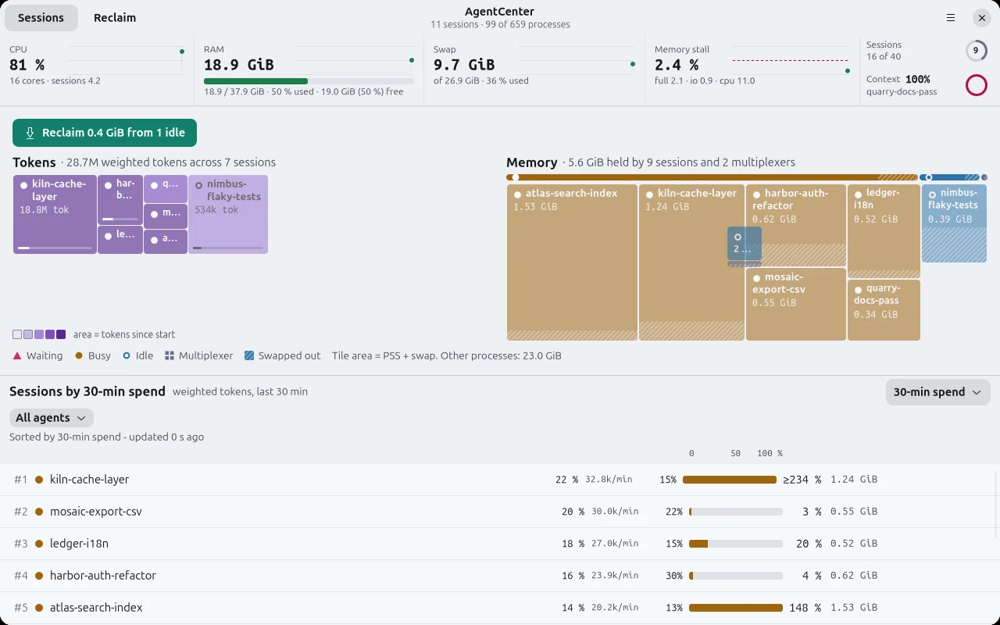
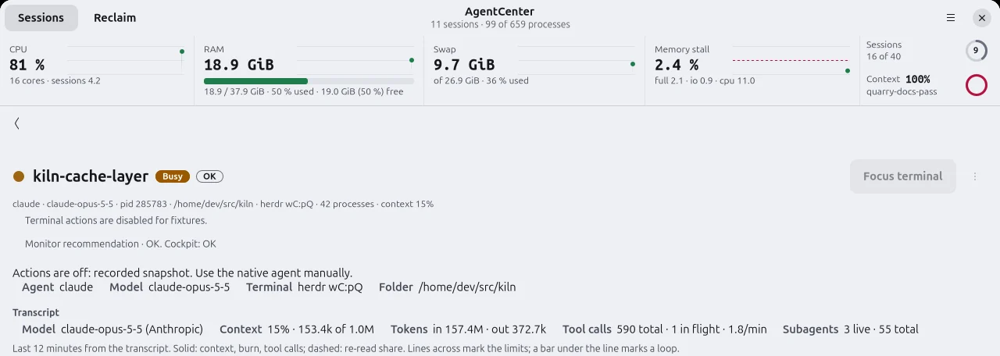

One session, whole tree
Each agent is shown with every process below it, including MCP servers, shells and builds. Ten agents are detected out of the box; AGENTCENTER_EXTRA_AGENTS adds more by process name.
AgentCenter is a Linux resource monitor that groups each AI coding session with every process it starts, then shows CPU, memory, swap, disk and I/O stall per session.
Linux · Rust · GTK4 + libadwaita · headless CLI

Why it matters
Claude Code, Codex and pi start MCP servers, shells, test runners and builds. In top their CPU, memory and disk traffic land on dozens of unrelated rows, so when the machine starts swapping you cannot tell which session caused it.
AgentCenter rolls each process tree up under the agent that started it and samples that session as one unit.
What it does today
Each agent is shown with every process below it, including MCP servers, shells and builds. Ten agents are detected out of the box; AGENTCENTER_EXTRA_AGENTS adds more by process name.
Proportional memory and swap (PSS, SwapPss), CPU and disk rates from two samples, and I/O stall per session. Stall percentages need kernel.task_delayacct=1; otherwise AgentCenter counts threads in D state. Metric details.
A GTK4 + libadwaita app that follows the system's light or dark style, and agentcenter-cli for table and JSON snapshots from any terminal.
Resource sampling is local and read-only. Transcript overlays retain metadata and hashes: tool-call arguments are normalized, hashed, and immediately discarded. Handoff is a separate opt-in action that can send bounded projected session text to the provider selected in Pi. Read the privacy design and Handoff limits.
Session detail
The detail page lists the agent, model, terminal pane and folder, then what the transcript says: context used, tokens in and out, tool calls in flight and live subagents.

Built-in detection
Detection adapters identify known agent process names and layouts. Extra process names can be added from the CLI environment.
Install
AgentCenter is Linux-only and currently ships from source. The installer builds both programs, adds the desktop entry, icon, and settings schema under ~/.local, and can update the same installation in place.
git clone https://github.com/eduardopin/agentcenter.git
cd agentcenter
bash install.shRequires Rust 1.99 or newer, a C linker, pkg-config, GTK 4.22+, and libadwaita 1.9+. On Debian or Ubuntu, bash install.sh --deps can install missing build libraries with sudo. On Ubuntu, GTK 4.22 and libadwaita 1.9 ship only in 26.04; older releases cannot build the GUI.
Headless by design
The CLI samples twice so CPU and disk rates are deltas. Its default interval is one second, and the same snapshot can be emitted as JSON.
agentcenter-cli snapshot
agentcenter-cli snapshot --json
agentcenter-cli snapshot --interval-ms 2000
# Add agents by process name
AGENTCENTER_EXTRA_AGENTS=my-agent \
agentcenter-cli snapshot
Pre-alpha, plainly stated
The current performance and GUI gates fail. The 500-process D-state fixture measured a 5.036 ms median against a budget below 5 ms. GUI first frame measured 456.4 ms against 300 ms, and CPU measured 12.198% of one core against 2%. Session actions still have incomplete acceptance evidence.
Read the known limitations and measurementsContribute
AgentCenter is Rust in three crates: agentcenter-core (sampler, process trees, adapters), agentcenter-cli and the GTK app agentcenter. Help is wanted on adapters for more agents, tests, accessibility evidence and the performance gates that pass with almost no headroom.
git clone https://github.com/eduardopin/agentcenter.git && cd agentcenter
cargo build --release -p agentcenter -p agentcenter-cli
bash scripts/ci.shscripts/ci.sh is the full gate: installer test, cargo fmt, clippy with warnings as errors, the workspace tests and the tick benchmark. GUI tests run on a headless display and need gtk4-broadwayd (package libgtk-4-bin). Build and test details.
Free software (AGPL-3.0). See LICENSE.